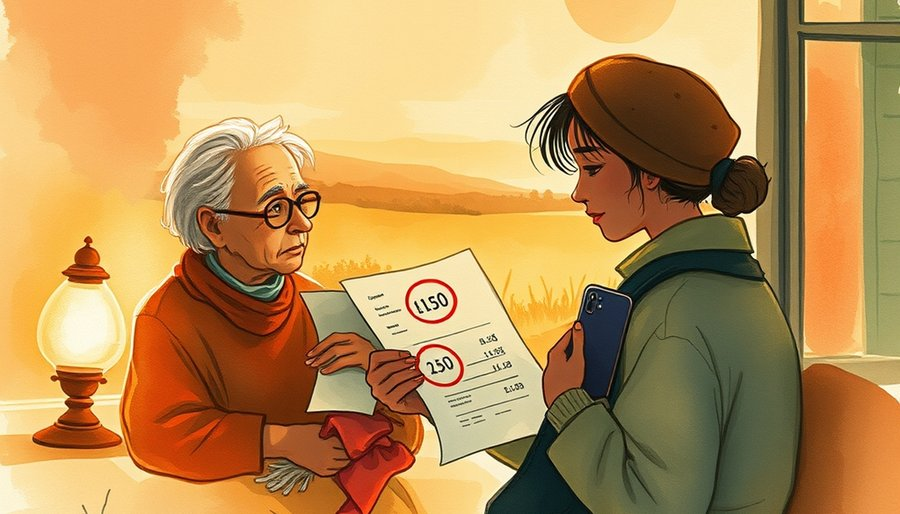
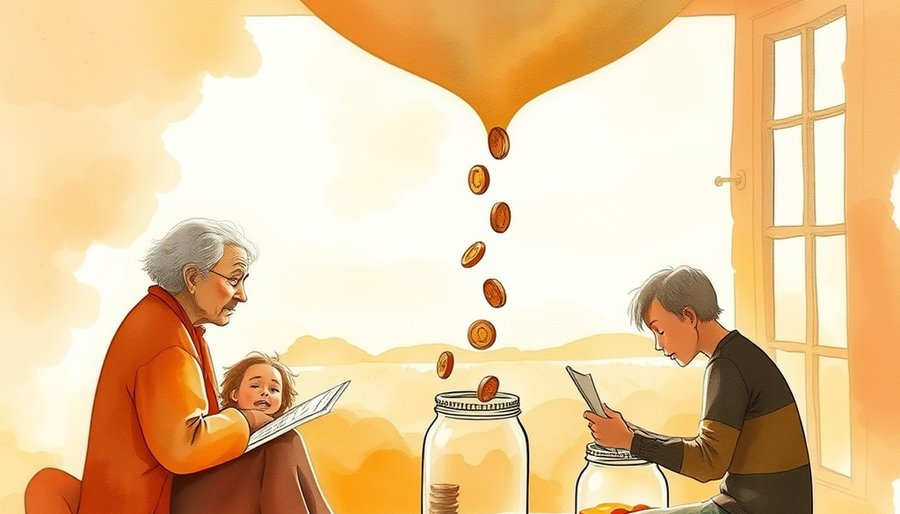
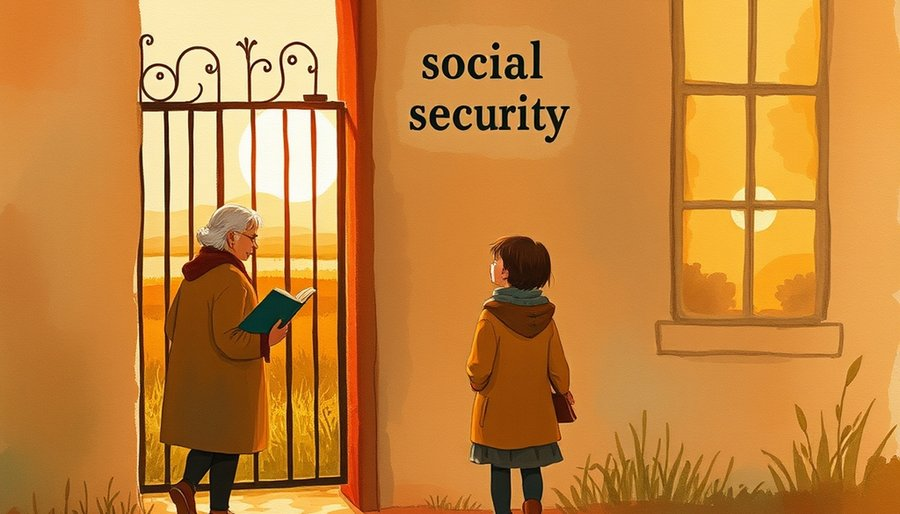

社保缴费基数本应与工资挂钩，但在不少地方，最低基数远超最低工资。2540元的最低工资意味着一个人即使只挣这么多，社保缴费基数也要从7270元起步。月薪五千的职工，每月社保个人部分加公积金可能超过两千元。灵活就业者没有单位分担，自己承担全部，最低每月也要交两千多。对一个收入本就不稳定的人，这笔钱不是小数目。交几个月可以，连续交几十年，很多人真的扛不住。
表面上看，这是缴费金额的问题。但更深一层，是制度门槛与真实承受力的脱节。社保制度在设计之初，假定参保人都有稳定工作、固定单位，收入足够覆盖缴费。当灵活就业成为数亿人的常态，这套假设已经塌了。制度没有跟着就业形态变，只能靠一套僵化的基数去套所有人。结果是，最不稳定、最需要保障的那批人，被最高的门槛挡在门外。
有一种常见的看法：年轻人不愿交社保，是因为短视，只顾眼前，不考虑养老。这个解释遗漏了一个关键事实。很多人想交，但制度不允许他们只交最需要的那部分。
五险一金被捆成一个大礼包，交就必须全交。养老、医疗、失业、工伤、生育，加上公积金，一个都不能少。可对收入下降、失业或经济困难的人来说，迫切且划算的只有医保。医保马上能用，生一场大病能真金白银省下一大笔钱。养老金是几十年后的承诺，对眼前随时可能发生的疾病和意外，分量完全不同。制度却把这两者捆死，不让人先保住那个最紧要的。
要么全交，要么断缴。很多人扛不住全交，只能选择断缴，连医保也一起失去。这违背了保障的优先级。当一个人连眼前的医疗安全都买不到，制度的兜底功能就已经失效了。

灵活就业者没有工作单位，每一分钱都是自己掏的。但缴费结构跟有单位的人一样，按比例分别进入统筹账户和个人账户。统筹部分用于当期发放，个人账户才是自己的。灵活就业者本就拮据，统筹掉一大块之后，进入个人账户的钱更少。他们自然会算账：交进去的钱，大部分被统筹走了，自己能攒下的不多。
加上断缴清零的惩罚逻辑，这笔账就更不划算了。很多人交了多年，因为失业或经济恶化断缴，到龄时缴费年限不足。制度既不允许补缴，也不退还自己交进统筹的部分。对那些断缴者来说，这不是一次失败，是一次惩罚。真金白银的钱被没收了，这种体感会迅速扩散。还在犹豫的人看到前例，更不敢轻易入场。
这几道机制合在一起，构成了一个排斥循环：门槛太高交不起，交不起就断缴，断缴就清零，清零就劝退更多人。循环的起点在制度设计。
有人可能会说，高基数是为了保证未来的养老金水平，让大家退休后能领到足够的钱。这个逻辑对稳定就业的职工或许成立，但对灵活就业者来说，眼前的高负担已经让他们丧失了参与的可能。一个制度如果让目标人群根本进不来，再高的标准也是空的。
更深的问题在公平感上。退休后，大家对社会的实际贡献不会差很多，但退休金的差距可能数倍。体制内外、高养老金和低养老金之间，落差巨大。工作时的收入差可以按贡献理解，退休后的差距却让人难以接受。年轻人看得见的，不仅是自己交不起，还有别人领得离谱。这种看得见的不公平，比任何劝说都更有力。信心一旦没了，池子才会真的枯竭。
制度需要弹性。让更多人能交得起、愿意交，比维持一套僵化的标准更务实。允许只交医保，允许按实际收入选档，允许统筹部分在断缴时合理退还。这些不是施舍，是让制度可持续的务实调整。一个交得起才可持续的循环，远比一个交不起也要硬交的壁垒更稳固。

社保本应是兜底的安全网，现在却成了一道门槛。门槛太高，最需要兜底的人进不来。他们想交，制度却把他们推了出去。
当医保这种现在就能用、能救急的保障，都因为交不起整包套餐而被放弃，到底是年轻人不想交，还是制度把他们推了出去？这个问题没有标准答案，但它指向一个必须正视的事实：制度的僵化，正在消耗它最需要的那批人的信任。而信任一旦流失，池子就开始漏了。
尾声
制度弹性的成本，远比池子萎缩的成本小。这个账，值得重新算一遍。
小汪老师的成长观察笔记